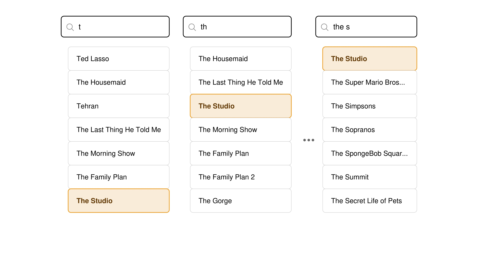
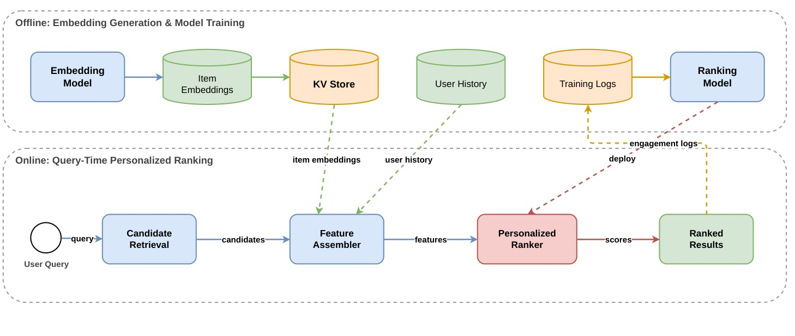
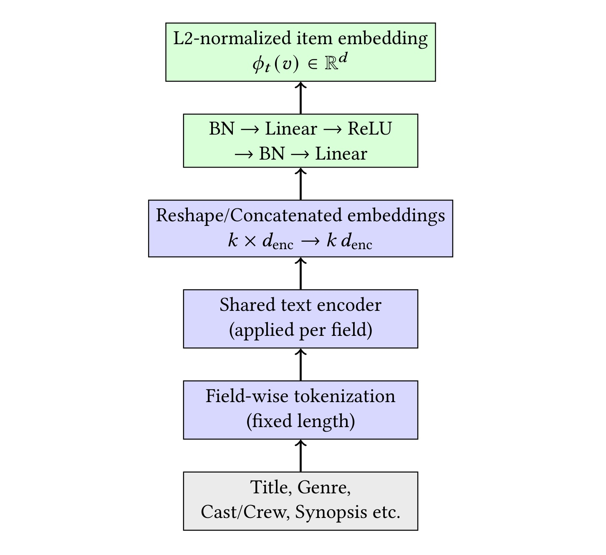
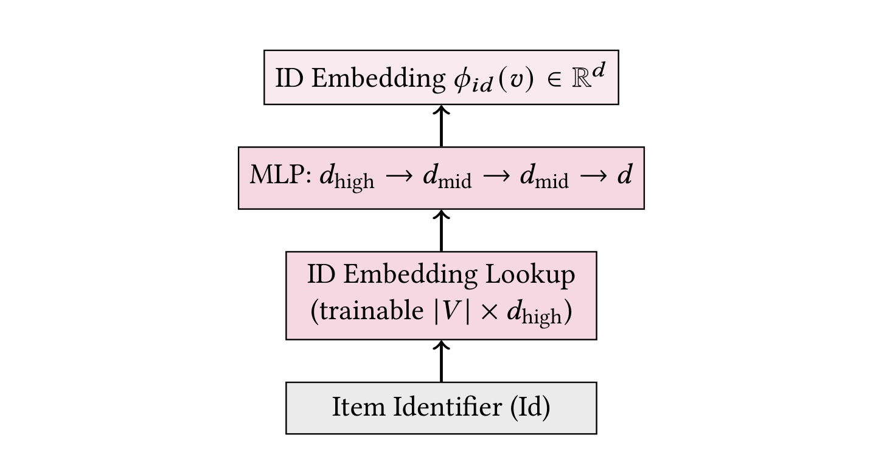
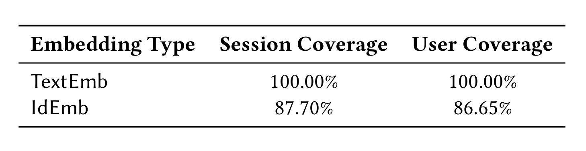
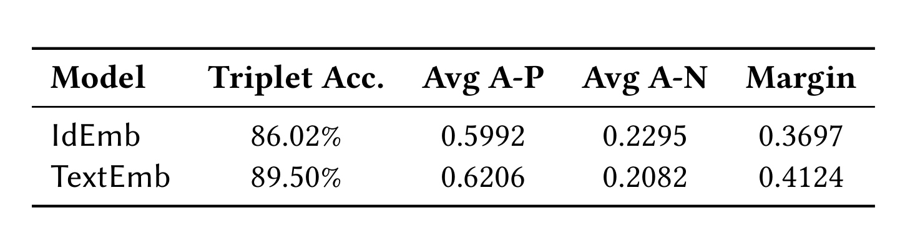
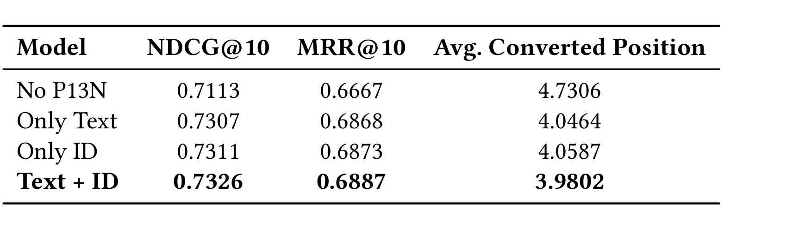
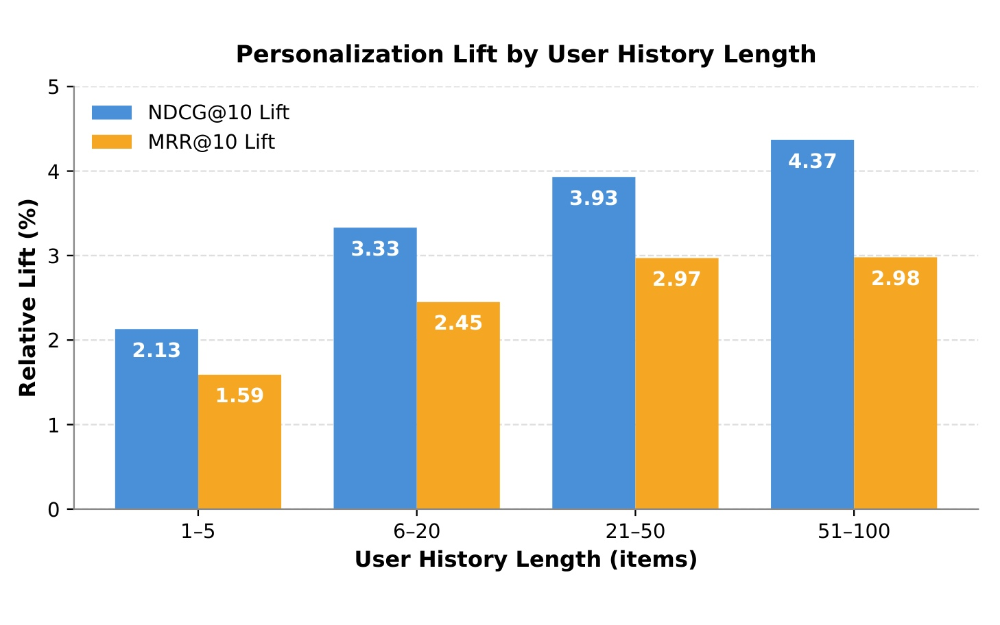
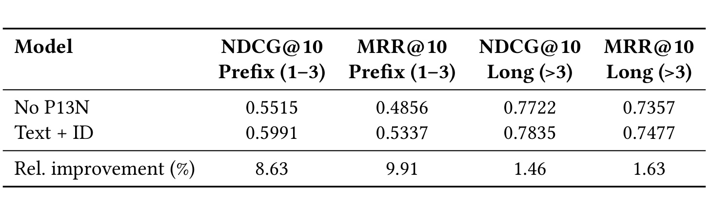
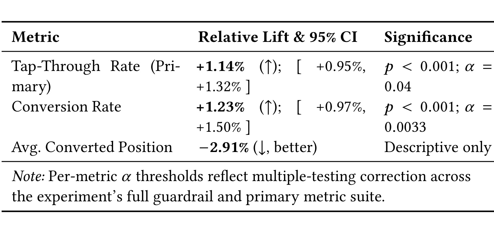

Personalizing Incremental Video Search with Hybrid Text and ID Embeddings
这篇论文研究 Apple TV 的增量视频搜索个性化，由 Apple 的 Vivek Kanojiya 等人完成，已被 RecSys 2026 Industry Track 接收。它不是另造一套端到端搜索模型，而是在现有候选召回与 XGBoost 排序链路中加入两种可互补的用户—内容亲和特征：一类来自多语文本语义空间 TextEmb，另一类来自互动协同空间 IdEmb。唯一论文入口为 arXiv:2607.13493。本轮核验 arXiv 摘要页和论文正文，没有发现与本文一一对应的独立代码或项目页。
增量搜索要求系统在每次击键后都返回有用结果，但用户只输入 1-3 个字符时，许多候选拥有几乎相同的词法证据，意图却已经与个人观看偏好有关；非个性化排序往往只能退回全局热度和宽泛行为先验，迫使用户继续输入才能找到目标内容。
1. 背景和问题
1.1 增量视频搜索的“信号真空”
普通网页搜索常把一个相对完整的查询作为排序输入，增量视频搜索却要在 t、th、the s 这样的每个中间状态上立即更新结果。早期前缀的候选集合很大，标题、演员和类型等词法特征又缺乏区分度；同一地区的用户如果共享一套默认排序，就很容易看到同样的热门内容。真正想找《The Studio》的用户可能在 t 时面对一长串以 T 开头的节目，在 th 时依然与《The Housemaid》《The Morning Show》等内容竞争，直到输入更多字符后目标才因字符串匹配变得明显。

Figure 1 把这种困难画成三次连续击键。左侧 t 的候选几乎全都符合前缀，目标《The Studio》排在列表底部；中间 th 虽然排除了部分候选，目标也只上升到第三位；右侧 the s 才让目标来到首位。图中的橙色框不是三个不同用户的点击结果，而是在说明同一个搜索意图随着字符增加才获得足够词法区分度。由此可见，论文要改善的不是完整查询上的一般相关性，而是词法信息尚不足、候选又高度可替代的中间排序状态。个性化如果能在第一、第二次击键就利用观看历史把《The Studio》提前，用户就少一次甚至数次继续输入和浏览列表的成本。这个图也解释了为什么后文必须按查询长度切片：若只汇报所有搜索的平均 NDCG，长查询占比会稀释最困难区间的真实收益。
论文将工业约束概括为五类。第一，短前缀本身歧义高；第二，“comedy”这类宽泛意图有许多合理结果，相关性并不是唯一答案；第三，目录既有头部也有长尾，新上线内容不能等到积累大量互动后才具备个性化能力；第四，协同信号面对冷启动天然缺失；第五，搜索是高频在线服务，个性化不能显著拉长每次击键的响应时间。这五点共同限定了解法：系统既需要行为信号的精度，也需要内容信号的覆盖，还必须把复杂计算尽量前移到离线阶段。
1.2 为什么单一表征不够
纯文本表征能够依据标题、类型、演员等元数据判断内容语义，因此新内容只要元数据齐全就能生成向量；但“文本相似”不等于“同一批观众会喜欢”，两个题材看似不同的节目可能因为演员、系列忠诚或人群偏好而经常被同一用户观看。纯 ID 协同表征恰好能捕捉这类共互动结构，却只对训练窗口内出现过的内容可靠：未见 item 没有可查询的 ID 向量，低频 item 的向量也更不稳定。论文没有试图让一种表征吞并另一种，而是把二者都变成 ranker 可消费的特征，让树模型依据候选、查询和其他特征决定何时信任哪一路。
这种做法延续了工业推荐中的混合系统思想，但把应用焦点放在“每次击键”的搜索排序。传统个性化搜索会用长期和短期兴趣修正结果，流媒体推荐也常把历史 item embedding 聚合成用户向量；本文的不同之处，是把短前缀作为独立高价值区间，并用离线、切片和线上三组证据证明收益确实集中在那里。换言之，贡献不在于首次提出平均历史向量、双塔或 XGBoost，而在于把这些成熟部件按增量搜索的覆盖、时延和可回退需求组合起来，并完成真实线上验证。
搜索场景还存在一个推荐首页不那么突出的约束：个性化不能破坏明确的导航意图。用户输入一个完整而唯一的片名时，不同用户通常都应该看到同一个目标；如果历史偏好压过强词法匹配，反而会把正确结果挤下去。作者因此没有把个性化分数直接当作最终相关性，而是将它们作为现有 relevance-first ranker 的附加特征。树模型仍能看到 query-title、演员、类型匹配和全局质量先验，在词法证据足够强时可以降低历史亲和度的作用，在短前缀或宽泛类型词上再提高个性化权重。这种“特征注入”设计为导航查询保留了保护层，也让回退不需要维护第二套模型。
从推荐系统角度看，搜索结果列表同时具备候选召回、用户建模和位置敏感反馈三种属性。曝光由旧排序策略决定，点击又受首屏位置影响，播放/购买信号虽然意图更强但更稀疏；如果直接用所有曝光或播放训练 embedding，很容易把历史策略偏差写回模型。论文选择搜索驱动的转化对训练，另用 LLM 构造较少受曝光影响的语义评估，再用用户级随机实验确认产品效果。这并未彻底消除偏差，却让“训练信号是什么、独立评价测量什么、线上指标最终回答什么”有了清楚分工。
1.3 论文真正要验证的三个问题
第一，两种 embedding 是否真的互补，而不是两套高度重复的相似度。作者分别训练 TextEmb 与 IdEmb，又在下游 ranker 中做 Only Text、Only ID、Text+ID 消融；只有混合模型稳定超过两种单路模型，互补性才成立。第二，个性化提升是否主要来自短前缀。为此，论文将 1-3 字符与更长查询分开评估，而不是只给总体均值。第三，离线指标能否转化为用户行为。三周线上 A/B 同时观察 tap-through、conversion 和成交内容位置，并为主要指标提供置信区间与校正后的显著性阈值。
这些问题也决定了阅读时不能只看 +8.63% 或 +1.23% 两个数字。短前缀提升需要放回基线值和长查询对照中理解；线上提升需要检查随机化单位、实验地区和统计校正；两种 embedding 的优劣则要区分“按元数据判断相似”和“按真实行为寻找下一次转化”两种评价口径。论文最有价值的部分，正是这些证据在不同口径下并不完全同向，却能在最终排序任务中形成一致结论。
此外，本文只改最终排序特征，没有证明召回阶段已经覆盖用户真正想看的长尾内容。若目标内容根本未进入候选集，TextEmb 与 IdEmb 的高亲和分数也无从发挥。因而离线 NDCG、MRR 和成交位置改善回答的是“已有候选怎样重排”，不是“整个目录怎样被完整检索”。理解这一边界，有助于避免把排序增益误写成端到端搜索召回能力的全面提升。
2. 方法
2.1 离线生成与在线排序的系统边界
系统把重计算放在离线阶段。TextEmb 与 IdEmb 定期覆盖视频目录生成 item vectors，同时训练最终的个性化排序模型。向量被物化到两个位置：一个是按 item ID 索引的低时延 KV Store，便于读取历史内容向量；另一个是搜索索引的文档元数据，使候选召回后能直接带出对应 embedding。用户观看历史也保存在低时延存储中，按较长时间窗口保留有界数量的最近播放事件；剧集级互动映射到父节目，同一内容的重复记录只保留最近一次，从而避免某个节目因连续播放多集而在均值中被过度放大。
双重物化也减少了在线 join：候选 embedding 随搜索文档返回，历史侧只需按 item ID 批量读取或利用缓存，Feature Assembler 不必临时调用深度编码器。固定刷新周期意味着表示不是实时变化的，这换取了稳定延时和可版本化部署；相应地，系统必须记录向量版本、历史更新时间和缺失比例，否则同一个用户向量可能由不同快照的 item 表示混合而成。论文没有给出缓存命中率和刷新周期，但它的架构已经把这些运维变量暴露为独立的服务边界。

Figure 2 的上半部分是离线链路：Embedding Model 产生 Item Embeddings 并写入 KV Store，Training Logs 一方面支持 Ranking Model 训练，另一方面形成 User History。下半部分是每次查询的在线链路：Candidate Retrieval 先按现有搜索系统召回候选，Feature Assembler 读取候选 embedding 和用户历史，构造特征后交给 Personalized Ranker，最后输出 Ranked Results。虚线箭头强调的是跨阶段依赖，而不是在线临时训练；在线只做历史读取、均值聚合、两路 cosine 和树模型打分，因此作者称新增时延很小。核心工程取舍是保持原有 relevance-first 召回与排序骨架，只把个性化作为可缺失的附加证据。这样即使用户无历史、退出个性化或某个 item 缺少 IdEmb，系统也能沿现有非个性化信号继续工作。
2.2 搜索行为正例与共享的对比学习目标
两种 embedding 的训练数据都来自搜索日志，日志包含查询、曝光、点击、购买/播放/订阅等转化及时间信息。正例对不是任意共播放，而是同一用户在给定时间窗内、由搜索驱动的互动历史中相邻或共同出现的内容。作者刻意不使用规模更大的通用播放日志，因为首页推荐、免费内容、促销曝光和共享账号会制造与搜索意图无关的共现；较小但场景对齐的搜索日志更适合训练搜索个性化。每个正例的负样本从当前 mini-batch 均匀采样，使模型学习把共同互动内容拉近、随机内容推远。
TextEmb 和 IdEmb 共享同一个 margin hinge 目标：
符号解释：\(i_t\) 是 anchor 内容，\(i_{t+1}^{+}\) 是同一搜索驱动互动序列中的正内容，\(i^{-}\) 是 batch 内负内容；\(\phi(\cdot)\) 表示 TextEmb 或 IdEmb 的 item encoder，\(m>0\) 是在验证集上选择的间隔。所有向量先做 L2 归一化，所以训练实现中的 dot product 与 cosine 等价。当正例相似度已经比负例高至少 \(m\) 时，损失为零；否则梯度会同时拉近正对并推远负对。两种模型用相同目标、数据构造和近似训练设置，使后续差异主要来自输入信息和模型归纳偏置，而不是不同 loss。
为了降低点击和曝光偏差，作者另建了一个只用于评估的 LLM 标注集。anchor 按内容热度分位均匀抽样，每个 item 作为 anchor 的次数受限；大模型读取标题、媒介类型、类型和主要演员等结构化元数据，判断“喜欢一个内容的观众是否可能喜欢另一个”。正判断构成 triplet 的 positive，负判断形成 hard negative。这里没有在训练或在线服务中调用 LLM，因而不会引入推理成本；但它提供了一个更偏语义、较少受既有曝光影响的观察窗口。
2.3 TextEmb 与 IdEmb 的互补表征
TextEmb 是多语 Siamese 文本编码器。每个 item 的标题、类型、艺人/演员和实体类型等字段分别按固定长度 tokenization，再送入共享的多语 sentence encoder。各字段输出被 reshape/concatenate，经过包含 BatchNorm、Linear 和 ReLU 的 projection head，最终得到 L2-normalized item vector。编码器在领域数据上继续训练，而不是完全冻结，因此能够把通用多语语义调整到视频搜索的内容关系上。

Figure 3 从下到上展示 TextEmb 的真实计算顺序。最底部是 Title、Genre、Cast/Crew、Synopsis 等元数据，字段独立截断可防止长简介吞掉标题和类型的 token 预算；共享 text encoder 让所有字段使用同一语义空间，也避免为不同语言和字段维护大量专用模型。字段向量随后拼接成 \(k d_{\text{enc}}\) 维表示，经 MLP 压到统一的 \(d\) 维，顶部再做 L2 normalization。归一化使 item—item 对比训练与在线 user—item cosine 使用同一几何尺度。TextEmb 的关键优势不是它在所有行为指标上都最强，而是只要内容元数据存在，就能为整个目录生成可比较向量；这使新上线和低频内容在 IdEmb 尚不可用时仍能参与个性化。
IdEmb 不读取任何文本。它把离散 item identifier 映射到一个高维可训练 lookup 向量，再经多层 MLP 投影到与 TextEmb 相同的 \(d\) 维空间。高维 lookup 可以保留 item 级行为差异，投影层则把参数表中稀疏学习到的共互动结构压成下游特征需要的统一尺度。训练仍使用前述正例对和 hinge loss，因此 IdEmb 学到的是“哪些内容吸引相似观众”，即使它们的标题或题材词并不接近。

Figure 4 只有四层，却清楚显示了与 TextEmb 不同的信息来源：Item Identifier 先进入大小为 \(|\mathcal{V}|\times d_{\text{high}}\) 的参数表，再经过 \(d_{\text{high}}\rightarrow d_{\text{mid}}\rightarrow d_{\text{mid}}\rightarrow d\) 的投影，输出 \(\phi_{\mathrm{id}}(v)\)。它没有字段编码器，也无法凭内容元数据为训练期未见 item 推断向量；因此模型对互动密集的头部和中部内容更有机会学到高精度人群邻近，对新内容则存在硬覆盖缺口。两张架构图放在一起看，互补性来自信息源而非网络深度：TextEmb 把内容语义外推到长尾，IdEmb 把观众共现压入离散 item 参数，二者最终都交给相同的 cosine 接口，便于 ranker 按场景组合。
2.4 用户画像、亲和特征与 pairwise XGBoost
在线阶段为每个用户分别在文本和 ID 空间构造历史均值。对候选 \(v\)，文本亲和特征与 ID 亲和特征为：
符号解释：\(u\) 是当前用户，\(v\) 是召回候选，\(\phi_t(v)\) 是候选的 TextEmb，\(\bar{\phi}_t(u)\) 是用户历史中可用 TextEmb 的聚合结果，\(s_t\) 衡量候选与用户既往内容在语义空间中的接近程度。短前缀的 query-title 匹配区分力弱时，这个分数提供跨语言、题材和元数据的个人内容偏好，但也可能把“文字相似”误当成真实观看意愿。
符号解释：\(\phi_{\mathrm{id}}(v)\) 是候选的协同 ID embedding，\(\bar{\phi}_{\mathrm{id}}(u)\) 是历史中具备 IdEmb 的内容聚合，\(s_{\mathrm{id}}\) 表示行为人群空间的亲和度。它能发现文本不相似但常被同类用户观看的内容；候选或历史项没有 ID 向量时，该路特征不可计算，系统把它标记为 missing，而不是用零假装“完全不相似”。
两类用户向量都用同一种均值池化：
符号解释：\(\mathcal{H}_u\) 是用户的有界近期观看集合，\(|\mathcal{H}_u|\) 是其中可用 item 的数量，\(\phi(v_i)\) 可分别代入 TextEmb 或 IdEmb。均值不依赖序列模型，计算与历史长度线性相关且可缓存，符合每次击键的服务预算；代价是所有历史项权重相同，既不显式利用观看时间，也不感知当前 query 和会话意图。无历史或退出个性化的用户，两路分数都置为 missing，ranker 继续依赖原有词法、行为聚合和内容质量特征。
最终 ranker 是采用 pairwise objective 的 XGBoost。它接收长短期行为、query 与标题/演员/类型的词法匹配、流行度与质量先验，以及新增的两路 affinity。目标可写为：
符号解释：\(\mathcal{P}\) 是由相关性标签构造的候选偏好对，\(s_i\) 与 \(s_j\) 是树模型对更优和更差候选的分数，\(\Omega(\mathcal{F})\) 是叶权重的 L1/L2 正则。训练标签按业务意图赋权，满足 \(w_{\mathrm{conv}}>w_{\mathrm{click}}>w_{\mathrm{imp}}\)，未互动的召回候选作为负例。该目标不要求 embedding 独立完成最终排序；它只要求两路相似度在现有特征无法区分候选时提供增量信息。风险在于树模型可能学到历史可用性、内容热度与个性化特征之间的关联，因此时间切分、线上随机实验和缺失值回退缺一不可。
3. 实验结果
3.1 覆盖率与 embedding 独立质量
离线评价使用严格位于训练窗口之后的时间留出数据，覆盖大规模搜索会话和主要设备。下游排序报告 NDCG@10、MRR@10 与 Average Converted Position（ACP）：前两者越高越好，ACP 是成交内容在排序列表中的平均位置，越低越好。作者先检查两类 embedding 能否服务，再把它们放入 ranker 评估，这个顺序很重要，因为高精度但只能覆盖一部分 item 的特征不能独立承担完整个性化。

Table 2 显示 TextEmb 的 session coverage 与 user coverage 均为 100%，IdEmb 则分别为 87.70% 和 86.65%。session coverage 表示一个训练会话中至少有一个 item 能取到对应 embedding，user coverage 表示用户历史中至少有一个 item 可用。约 12%-13% 的差距主要来自 item 在 IdEmb 训练窗口中从未出现，因而没有 learned ID vector，而不是服务查询偶发失败。这个结果给混合设计提供了比“两个模型可能更好”更具体的理由：TextEmb 是覆盖底座，确保新内容和长尾历史不至于完全失去个性化；IdEmb 在大多数有行为数据的会话上追加协同精度。需要注意，100% coverage 不等于 TextEmb 对所有 item 都高质量，只说明能计算；同样，IdEmb 有向量也不保证低频 item 已被充分训练。
LLM 标注 triplet 评价试图把语义质量与既有曝光分开。anchor 按热度分位抽样，模型只看到结构化元数据，再判断两项内容是否可能被同一观众喜欢。由于评价者无法看到真实共观看图，它更偏向文本可解释的相似性，因此结果应被理解为“语义视角”，而不是线上行为的无偏真值。

Table 4 中 TextEmb 的 triplet accuracy 为 89.50%，高于 IdEmb 的 86.02%；正例平均相似度 0.6206 对 0.5992，负例平均相似度 0.2082 对 0.2295，因此 margin 达到 0.4124，也高于 IdEmb 的 0.3697。若只看这张表，似乎 TextEmb 全面占优；但 session-based 的 Table 7 在只用 cosine 排序成交 item 时，IdEmb 的 all-recalled 平均名次 10.81 略优于 11.05，impressed-only 也以 1.89 略优于 1.91。方向反转并不矛盾：LLM 按元数据定义“相似”，TextEmb 训练目标与它更一致；真实下一次转化是行为事件，IdEmb 捕捉的共人群结构更贴近这个目标。二者没有一个评价口径能单独决定部署，最终仍要看下游 ranker 的组合结果。
3.2 离线排序主结果与消融
作者比较四种条件：No P13N 是不含两路个性化特征的基线；Only Text 只加入 \(s_t\)；Only ID 只加入 \(s_{\mathrm{id}}\)；Text + ID 同时加入两者。所有模型使用相同的时间留出协议和其余特征，因此差异可归因于个性化特征组合。Table 5 的 test loss 从基线 0.2920 降到 Only Text 0.2725、Only ID 0.2701、Text + ID 0.2700，说明混合模型没有因新增特征在留出集上明显过拟合；更重要的业务排序指标见 Table 6。

Table 6 的基线 NDCG@10 为 0.7113、MRR@10 为 0.6667、ACP 为 4.7306。Only Text 分别改善到 0.7307、0.6868 和 4.0464，Only ID 为 0.7311、0.6873 和 4.0587，说明任一路都包含现有行为聚合与词法特征没有完全吸收的用户信号。Text + ID 进一步达到 0.7326、0.6887 和 3.9802，在三项指标上都最好；相对基线，NDCG@10 提升 2.99%，MRR@10 提升 3.30%，成交内容平均向前移动约 0.75 个位置。单路差距很小而混合仍持续提高，支持“互补但边际收益递减”的判断：大部分个性化信息可由任一路提供，另一条路线负责覆盖不同内容区间和相似性定义。表中没有延时列，所以“minimal latency”仍主要是架构论证，而不是这张消融表直接证明的结果。
从绝对差值看，混合模型相对 Only Text 的 NDCG@10 只增加 0.0019，相对 Only ID 增加 0.0015；MRR 的增量也分别只有 0.0019 和 0.0014。这说明第二路 embedding 的边际收益远小于从非个性化到任一单路的第一步收益。工业上是否值得承担双模型训练、存储和新鲜度管理，不能只由统计上的“最好”决定，还要把线上 +1.14% tap-through 与 +1.23% conversion 放进成本评估。另一方面，ACP 从两种单路的约 4.05 继续降到 3.98，表示组合特征并非只在尾部调换无关候选，而确实把最终成交内容再向前推了一点。
Table 5 还有一个容易被忽略的细节：Only ID 的 test loss 0.2701 略低于 Only Text 的 0.2725，但 Table 6 中两者的排序指标接近，且不同指标互有微小领先。loss 是训练目标的聚合量，业务指标是截断到前十或关注首个成交位置的排名量，两者不必完全同序。混合模型 test loss 0.2700 只比 Only ID 低 0.0001，却在三项业务排序指标上都取得最优，这再次说明应以任务指标和线上实验判断，而不能用单个训练损失替代上线证据。
3.3 历史长度与查询长度切片
总体均值之后，作者从用户历史和查询长度两个方向切片。历史长度分为 1-5、6-20、21-50、51-100 个 item。这个分析既检验均值池化是否随证据增加而变强，也暴露冷启动用户的收益上限。论文报告最长历史组的非个性化基线 NDCG@10 反而从短历史组约 0.733 降到约 0.680，因此更大 lift 不能简单解释为“这组用户本来就更容易排”。

Figure 5 中 NDCG@10 lift 从 1-5 个历史项的 2.13%，依次升至 6-20 的 3.33%、21-50 的 3.93% 和 51-100 的 4.37%；MRR@10 lift 分别为 1.59%、2.45%、2.97% 和 2.98%。NDCG 的单调上升说明历史越丰富，均值向量越能稳定表达长期口味；MRR 在最后两个桶趋于饱和，则表明第一项成交内容的位置收益可能更早达到上限。稀疏历史桶仍为正，证明系统不是只有重度用户才有效，但 1-5 项的收益明显较小，也提醒线上平均 lift 会受无历史和浅历史用户稀释。图中没有置信区间，不能仅凭柱高判断相邻桶差异是否统计显著；它更适合支持总体趋势而非精确分桶优劣。
查询长度切片更直接对应论文标题中的 incremental。作者把 1-3 字符定义为 prefix queries，把超过 3 字符定义为 long queries，并在相同的 No P13N 与 Text + ID 条件下计算两组绝对指标和相对提升。

Table 8 中，短前缀的 NDCG@10 从 0.5515 提升到 0.5991，相对增幅 8.63%；MRR@10 从 0.4856 提升到 0.5337，增幅 9.91%。长查询的基线本来更高，NDCG@10 从 0.7722 到 0.7835，仅提升 1.46%；MRR@10 从 0.7357 到 0.7477，提升 1.63%。这组绝对值与相对值共同说明，个性化并非在所有查询上等比例增益，而是在词法证据最弱的早期状态补充缺失区分力。短前缀的基线明显更低，也意味着它仍是更困难的排序问题；即使提升 8.63%，绝对 NDCG 仍低于长查询。工程上可以据此考虑按 prefix length、候选歧义或 lexical margin 调整个性化权重，而不是对所有查询一刀切增强。
3.4 三周线上 A/B 与证据边界
线上实验持续三周，control 使用非个性化 XGBoost，treatment 使用 IdEmb + TextEmb + XGBoost，用户级随机并等流量分配，覆盖单一区域和主要客户端平台。用户需同意个性化推荐才具备使用历史的资格。作者对指标组做多重检验校正，并每日监控稳定性，以减少短期新奇效应。随机化单位是用户而非请求，可以避免同一用户在两种体验间频繁切换导致污染。

Table 10 报告 Tap-Through Rate 提升 1.14%，95% 置信区间为 [0.95%, 1.32%]，且 \(p<0.001\)，低于该指标校正后的 \(\alpha=0.04\)；Conversion Rate 提升 1.23%，区间为 [0.97%, 1.50%]，同样 \(p<0.001\)，通过更严格的 \(\alpha=0.0033\)。两段区间完全位于零以上，支持主要线上指标的正向结论。Average Converted Position 相对改善 2.91%，方向为数值下降，但作者明确把它列为 descriptive only，不能与前两项显著性结论等量齐观。表内还说明不同 \(\alpha\) 来自全套主要指标和 guardrail 的多重检验校正，这比只展示一个统一 0.05 阈值更可信。
线上结果证明混合个性化能在真实产品中带来小而稳定的互动与转化改善，但外推仍需克制。实验只在单一区域进行，没有展示不同语言、目录规模和市场偏好的异质性；top-line lift 按全用户平均，其中包含没有可用历史的用户，因此对可个性化人群可能是保守估计，却也不能在缺少分人群线上区间时自行放大。论文还指出 embedding snapshot 与在线历史更新并非完全同步，训练/服务 skew 和新鲜度可能削弱离线到在线的一致性。总体而言，离线总体、短前缀切片和线上主要指标三条证据方向一致，是这篇工业论文最扎实的部分。
统计上还需区分“显著”与“规模”。两个主要指标的区间很窄，说明在当前流量和实验周期下估计稳定，但相对提升约一个百分点，业务价值取决于搜索量、转化基数和实现成本。论文没有公开绝对 tap-through、conversion、样本量或 guardrail 全表，因此外部读者无法独立重算检验功效，也无法判断某些负向 guardrail 是否接近阈值。ACP 没有推断性结论，恰当的表达是“方向一致的描述性证据”，不能说三项指标都达到统计显著。
离线 +8.63% 与线上约 +1% 也不应直接视为衰减比率。前者只针对有历史的 1-3 字符查询并使用 NDCG，后者是全用户、全合格搜索流量上的行为指标，分母、人群和目标都不同。短前缀可能只占一部分请求，无历史用户无法使用两路特征，线上用户还会改变输入和点击行为。因此两组数字的正确关系是“困难切片解释了收益来源，整体实验确认了产品方向”，而不是从离线百分比预测线上百分比。
4. 总结
4.1 我的判断
这项工作的亮点不是模型结构新颖，而是问题切分准确、系统接口克制、证据链完整。Apple 将“每次击键”视为不同信息量的排序状态，发现 1-3 字符前缀是非个性化模型的薄弱区；随后用 TextEmb 解决目录覆盖和冷启动，用 IdEmb 捕捉行为共现精度，再让既有 pairwise XGBoost 选择两路特征的使用方式。离线消融证明单路都有效、组合最好，历史长度和查询长度切片解释收益从何而来，三周实验则确认真实交互和转化提升。对于成熟搜索系统，这种低侵入式增量改造通常比全面替换召回排序更容易上线、回滚和归因。
同时，混合方案的真实含义应表述为“覆盖与精度互补”，而不是“两个 embedding 简单相加”。Table 2 说明 TextEmb 是覆盖兜底，Table 4 与 Table 7 的方向反转说明两种空间测量不同相似性，Table 6 才证明这些差异在下游任务中有非冗余价值。最值得复用的分析方法，是把表示质量、下游排序、困难切片和线上行为分开检验，避免用单一离线指标替代产品结论。
4.2 工程启发与复现重点
若复现这条路线，首先要保证正例数据与搜索场景对齐，区分搜索驱动转化和首页/推荐曝光带来的共播放；其次要记录 TextEmb、IdEmb 在 item、session、user 三层的实际覆盖和缺失原因，不能只比较 embedding accuracy；再次要用严格时间切分评估，并单独报告短前缀、长查询和不同历史深度，否则总体 lift 很容易掩盖真正受益的区间。线上实现还应监控 KV 历史新鲜度、embedding snapshot 版本、missing feature 比例、每次击键的新增时延，以及候选集在头部和长尾内容上的覆盖变化。
论文还有几项明确局限：
- 区域外推有限。 线上实验来自单一区域，不同语言、内容目录和用户行为结构可能改变 TextEmb 与 IdEmb 的相对贡献。
- 历史聚合过于静态。 均值池化忽略观看顺序、时间衰减和当前会话意图，长历史中早期兴趣会与近期兴趣等权混合。
- 行为评价仍受曝光影响。 离线 session labels 来自既有系统，促销、可用性和历史排序会共同塑造正例；LLM 标注只能提供另一种偏语义的视角，不能完全消除偏差。
- 协同覆盖依赖训练窗口。 未见 item 没有 IdEmb，低频 item 向量不稳定；TextEmb 能提供向量但不必然恢复真实人群亲和。
- 新鲜度和训练/服务 skew 未量化。 论文承认历史更新与 embedding 快照不同步，却没有给出 stale feature 对线上 lift 的敏感性。
- 时延证据不完整。 架构设计强调低延迟，但主表没有披露 p50/p95 延时、存储开销或不同历史长度下的计算成本。
4.3 后续跟进
后续至少有三条值得验证。第一，将均值池化替换为带时间衰减、query-aware attention 或轻量序列模型，并在相同线上时延预算下比较；这能判断 Figure 5 的历史越长收益越高，是信息量增加还是简单平均仍未充分利用时序。第二，引入图像、海报、预告片或音频等多模态 item embedding，重点观察元数据稀疏和跨语言目录；如果多模态只提高语义 triplet，却没有改善 Table 6 式下游消融，就不应直接增加在线复杂度。第三，加入显式探索和新内容冷启动实验，跟踪上线初期 TextEmb 如何过渡到 IdEmb，并测量不同热度分位的收益和公平性。
还可以继续细化短前缀门控：用候选间 lexical score margin、查询熵、字符长度与用户历史置信度共同估计“当前是否需要强个性化”，在导航型完整查询上降低个性化权重，在宽泛或歧义前缀上增强。这样既沿用了本文最强的切片结论，也能减少个性化覆盖过强时偏离共同明确意图的风险。真正的下一步不是无限堆叠用户模型，而是把何时启用、信任哪一路、缺失时如何回退、收益集中在哪类请求变成可观测且可实验的系统策略。